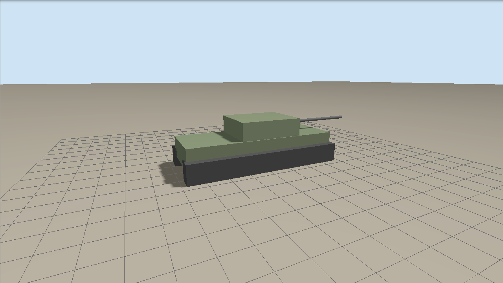
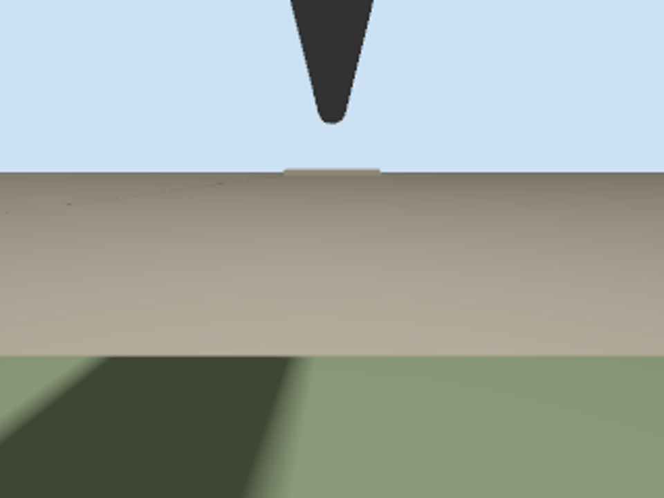
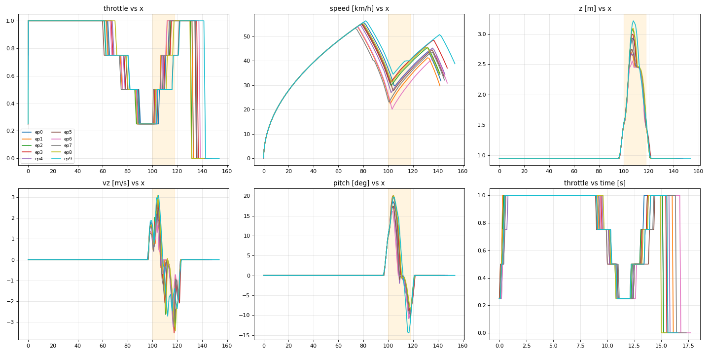
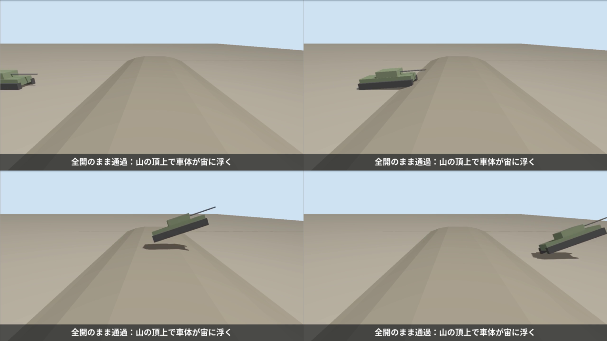
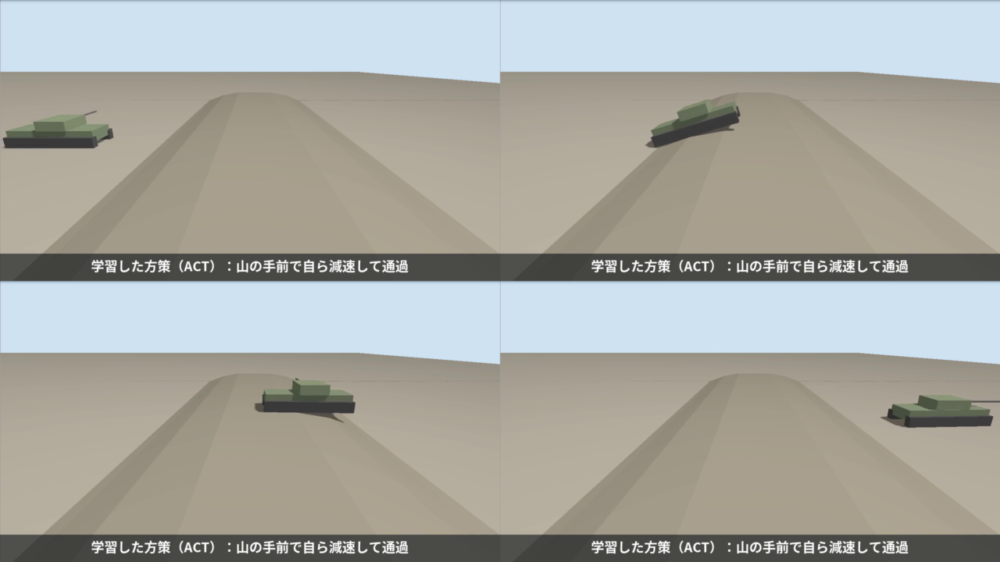
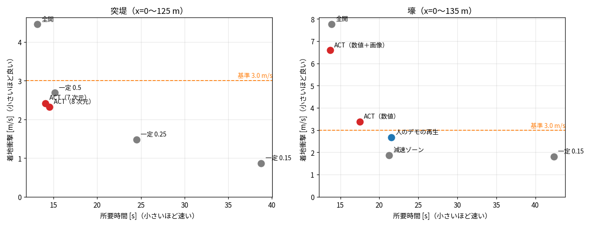
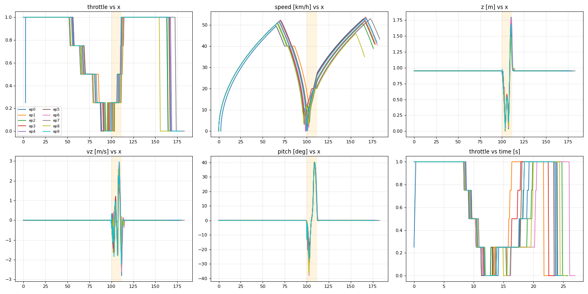
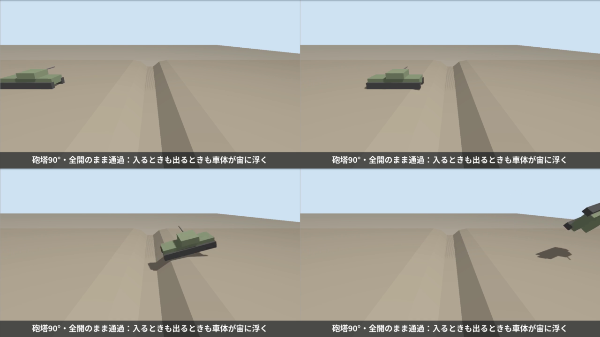
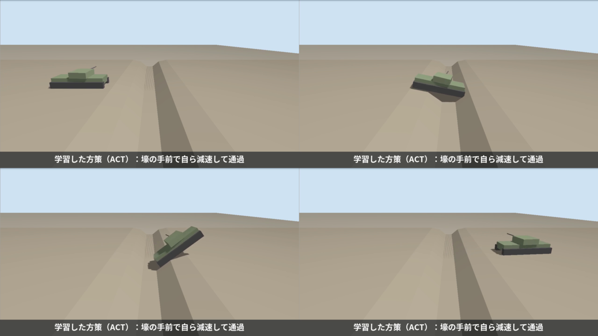

重量装軌車両の不整地走行を模倣学習（ACT）で再現する
― 突堤と壕の通過：飛びを抑えつつ、速度を保つ ―
Physical AI 応用編1 最終課題 ／ Ignition Gazebo ＋ ROS 2 Humble ＋ LeRobot（ACT）
1. 概要と目的
車両の無人化・自律化は、建設、災害対応、探査など、さまざまな分野で求められている。自動運転技術は進展しているが、道路を想定したものが中心で、
不整地を走る車両にそのまま適用することは難しい。不整地では、地形に応じて速度を切り替える操縦の技能が重要になる。
特に車両が重いと、段差や溝の縁で車体が宙に浮く（「飛ぶ」）だけで、着地の衝撃が故障の原因になる。
かといって、衝撃を避けてずっとゆっくり走るのでは、作業の効率や、危険な場所に留まる時間の点で不利である。
通過の瞬間は速度を抑えて衝撃を和らげ、それ以外では速度を出すという操縦が求められる。
本課題では、Ignition Gazebo 上に 44 t 級の重量装軌車両（多輪スキッドステアで履帯を模擬）を自作し、最高速度 80 km/h、加速と減速に制限を設けて、
実際の重量車両らしい動力特性にした。操縦経験のある人のテレオペのデモから、
ACT（Action Chunking with Transformers）でこの技能を学習させた。地形は、車両の大きさに合わせて作った 2 つである。
- 突堤（台形の山）：速く越えると頂上で車体が跳ねる。
- 壕（深い溝）：速く入ると、入るときも出るときも車体が飛ぶ。
観測には、位置・姿勢・速度に加えて鉛直速度（飛びの検出）などを使い、前方カメラの画像も試した。学習は GPU で行った。
結果の要約
- 突堤：ACT は 10 試行すべてで跳ねずに通過した。所要時間は人のデモと同等（14.1〜14.5 秒対 14.9 秒）で、一定の中速（0.5）より速く、衝撃も小さい（2.3〜2.4 m/s 対 2.7 m/s）。全開は 0/10（跳ねる）。
ただし、この突堤は一定の中速でも通れる易しい課題だった。
- 壕：ACT は人のデモより短い時間で通過した（17.5 秒対 21.5 秒）が、壕に入るときの減速が人より浅く、入るときの着地衝撃が 3.35 m/s と基準（3.0 m/s）をわずかに超えた。
「飛ばずに通過」は 2/10 で、速度と飛びの両立は、壕では未達である。
- 前方カメラの画像を加えた学習は、10 本のデータでは不安定だった。
- 考察として、加減速の制限による応答の遅れ、観測の種類と周期、衝撃を測るセンサの選択など、フィジカル AI としての論点を整理した（第 6 章）。
2. システム構成
図1 システム構成。車両・地形・操縦系・観測系・評価ツールはすべて自作。観測 /tank/state は 8 次元（位置、ピッチ、速度、鉛直速度、ロール角、直前のスロットル指令など）。
車両モデル（自作・架空のパラメータ）
- 公開されている重量車両の概数に合わせた架空のモデル。総質量 44 t（車体と上部構造 39.2 t、車輪 16 個で 4.8 t）、車体 7.4×2.6×1.0 m、全長 約 9.4 m。
慣性は形状と質量から計算する生成スクリプトで作る。
- 片側 8 輪（半径 0.45 m、間隔 0.95 m、接地長 6.65 m）を DiffDrive に登録して、スキッドステアでその場の旋回もできる。
履帯は見た目用の箱で、衝突判定は車輪が担当する。
- 動力特性（仮定の値）：最高速度 80 km/h（前進）・40 km/h（後退）、加速 1.5 m/s²（0 から 80 km/h まで約 15 秒）、減速 3.5 m/s²（80 km/h から約 70 m）、旋回 1.0 rad/s。
DiffDrive の速度・加速度の制限として実装し、測定で確認した。

図2 車両モデル（44 t 級、片側 8 輪）。
地形（車両の大きさに合わせて作成）
- 突堤：高さ 1.5 m、斜面 20°、頂上の平らな部分 6 m、頂上の縁に面取り。助走 100 m（加速 1.5 m/s² で 70 km/h 以上が出せる長さ）。
- 壕：上端の幅 11 m、深さ 2.2 m、壁 40°、縁に長さ 2.5 m の緩い面取り。助走 100 m。
- 寸法は、一定のスロットルで走らせて、着地の衝撃を測りながら決めた。
操縦系・観測
- 行動：アクセル（−1〜1）とハンドル。teleop と方策は同じトピック
/tank/command に配信するので、差し替えて使える。
テレオペのスロットルは、細かい刻み（0.05、約 4 km/h）と大きい刻み（0.25）を使える。
- 観測（8 次元）
[x, z, pitch, v_forward, …, vz, roll, throttle_cmd]：真値の位置（x, z）、IMU のピッチ角とロール角、車輪オドメトリの前進速度、
鉛直速度 vz（真値の z を差分）、直前のスロットル指令。
実際の車両の速度を観測に使い、スロットルの目標値は行動側にある。
- 前方カメラ（160×120、10 Hz）：車体の前端から前方を見る。画像を加えても、シミュレーションの速度はほとんど落ちなかった（実時間比 0.88 → 0.83）。

図3 前方カメラの画像の例（スタート地点）。
3. 学習と評価の方法
| 突堤 | 壕 |
|---|
| デモ | 操縦経験者のテレオペ 10 エピソード（助走は全開、山の手前で段階的に減速、越えたら再加速） | 同 10 エピソード（壕の手前で段階的に減速し、縁でほぼ停止してから進入、出たら再加速） |
| データ | 1672 フレーム（fps 10） | 2487 フレーム（fps 10） |
| 学習 | ACT（chunk 16、バッチ 8、5000 ステップ）、GPU（RTX 4060）で約 3〜5 分 |
| 推論 | シミュレーション時刻の 10 Hz、行動チャンクを 8 ステップ実行 |
評価の指標：着地衝撃
「飛び」を、真値の鉛直速度の、0.1 秒間の変化の最大値（着地衝撃 [m/s]）で測る。同じ条件で繰り返すと、ほぼ同じ値になる（突堤を全開で通すと 3.6〜3.9 m/s、スロットル 0.2 で 1.2 m/s）。
3.0 m/s 未満（落下の高さにして約 0.46 m 相当）を「跳ねずに通過」とした。壕では、入るときと出るときの衝撃をそれぞれ測り、どちらも 3.0 m/s 未満なら「飛ばずに通過」とする。
評価は、操縦者の画面のシミュレーションと干渉しない隔離環境で、毎回リセットして 10 試行行った。
4. 結果
4.1 突堤（各 10 試行）
| 方式 | 通過 | 跳ねずに通過 | 着地衝撃（平均／最大） | 所要時間 |
|---|
| 一定スロットル 1.0（全開） | 10/10 | 0/10 | 4.46／5.58 m/s | 13.1 s |
| 一定スロットル 0.5 | 10/10 | 10/10 | 2.69／2.95 m/s | 15.1 s |
| 一定スロットル 0.25 | 10/10 | 10/10 | 1.48／1.66 m/s | 24.5 s |
| 一定スロットル 0.15 | 10/10 | 10/10 | 0.87／0.92 m/s | 38.8 s |
| ACT（観測 8 次元：throttle_cmd あり） | 10/10 | 10/10 | 2.32／2.88 m/s | 14.5 s |
| ACT（観測 7 次元：throttle_cmd なし） | 10/10 | 10/10 | 2.42／2.76 m/s | 14.1 s |
| 人のデモ 10 本（記録の概算） | 10/10 | ― | 1.2〜2.7 m/s（10 Hz の概算） | 14.9 s |
全開（約 74 km/h）では 0/10 で、着地衝撃が 4.5 m/s に達する。一定の中速（0.5）は 10/10 で、一定 0.25 や 0.15 は、さらに衝撃が小さいが、時間が 1.6〜2.6 倍かかる。
ACT は、人のデモと同じく、助走は全開で、山の手前でスロットルを段階的に落とし、越えたら再加速して、所要時間 14.1〜14.5 秒、衝撃 2.3〜2.4 m/sで通過した。
一定の中速（15.1 秒、2.7 m/s）より速く、衝撃も小さい。throttle_cmd（直前の指令）を観測に含めるかどうかで、差は出なかった。
ただし、この突堤は一定の中速でも通れるので、速度の切り替えを必須にするほど厳しくない。ACT の優位は小さい。

図4 突堤のデモ 10 本（橙の帯が山）。助走は全開、約 60〜90 m でスロットルを段階的に落とし、山を越えたら再加速する。最高速度は約 55 km/h、山での最低速度は 20〜34 km/h。

図5 比較：全開のままの通過。山の頂上で車体が大きく宙に浮く。

図6 ACT の走行。山の手前で減速し、越えたあとに再加速する。
4.2 壕（各 10 試行）
| 方式 | 通過 | 飛ばずに通過 | 着地衝撃 入る／出る | 所要時間 |
|---|
| 人のデモ 10 本の再生 | 10/10 | 9/10 | 1.87／2.62 m/s | 21.5 s |
| 一定スロットル 0.15 | 10/10 | 10/10 | 1.61／1.80 m/s | 42.4 s |
| 全開のまま | 10/10 | 0/10 | 0.00／7.77 m/s | 13.9 s |
| ルール：x=70 m から 0.15、x=112 m から全開 | 10/10 | 10/10 | 1.60／1.84 m/s | 21.3 s |
| ACT（観測：数値のみ） | 10/10 | 2/10 | 3.35／2.58 m/s | 17.5 s |
| ACT（観測：数値＋画像）1 回目 | 10/10 | 1/10 | 1.09／5.96 m/s | 13.7 s |
| ACT（観測：数値＋画像）2 回目 | 10/10 | 3/10 | 1.17／5.55 m/s | 13.4 s |
「人のデモの再生」は、記録した操作指令を再生した結果で、学習に使ったデモと同じなので、独立な比較ではない。
- 壕を跳ばずに通すには、約 12 km/h 以下に落とす必要がある（一定スロットルでの測定：0.15 で 1.6〜1.9 m/s、0.2 で 3.1〜3.7 m/s）。全開では、出るときの衝撃が 7.8 m/s に達する。
- ACT（数値のみ）は、助走は全開で、壕の手前で段階的に減速し、通過後に再加速する、人と同じ形の操作ができた。所要時間は人のデモより短い（17.5 秒対 21.5 秒）。
- 残る課題は入るときの減速の深さである。人は縁でほぼ停止してから入るが（入るときの衝撃 1.87 m/s）、ACT はそれより速く入り（3.35 m/s）、基準 3.0 m/s を超えた。出るときの衝撃は、人とほぼ同じ（2.6 m/s）。
- 学習のステップ数（3000〜10000）や、行動チャンクの実行ステップ数（1、4、16）を変えても、入るときの衝撃は 3.0〜3.7 m/s のまま変わらなかった（第 6 章）。
- 前方カメラの画像を加えた学習は不安定で、壕の中を全開のまま進むことがあった（第 6 章）。

図7 所要時間（横軸）と着地衝撃（縦軸）。左下ほど「速くて、衝撃が小さい」。突堤（左）では、ACT（赤）は人のデモや一定の中速と同程度の位置にある。壕（右）では、ACT（数値）は人（青）より速いが、衝撃が基準（橙の破線）をわずかに超える。

図8 壕のデモ 10 本（橙の帯が壕）。助走は全開、約 55〜90 m で段階的に 0.25 まで落とし、縁でほぼ停止してから進入。壕を出たら全開に戻す。

図9 比較：全開のままの通過。壕を出るときに、車体が大きく宙に浮く。

図10 ACT の走行。壕の手前で減速して通過する。
5. 工夫した点
- タスクの設計：「飛びを抑えつつ速度を保つ」という実用上の要請を、速度の切り替えを含む課題にした。車両の大きさと動力特性を現実に近づけると、課題の性質が変わることも分かった（80 km/h では壕は飛び越せてしまうため、通れる速度の幅を実測して地形を決めた）。
- 測る指標を作り直した：IMU の加速度は、長い車体の姿勢変化にも反応して値が安定しなかった。真値の鉛直速度の変化（着地衝撃）にして、同じ条件で再現する指標にした。
- 観測の拡張と比較実験：鉛直速度・ロール角・直前の指令を加え、「直前の指令」が行動の写しになる危険を、あり・なしの比較で確かめられるようにした。
- デモ収集の仕組み：記録するトピックを固定し、記録前後に確認する記録スクリプトを作った。デモの数値とグラフで、操作のそろい具合を確かめた。
- GPU 学習と、前方カメラ：GPU を渡した学習用のコンテナを分けて用意した。カメラの画像を学習に入れる変換・学習・推論を実装した。
6. 失敗と考察
6.1 学習条件を変えても、壕に入るときの減速は深くならなかった
学習のステップ数（3000〜10000）と、行動チャンクの実行ステップ数（1、4、16）を変えても、壕に入るときの着地衝撃は 3.0〜3.7 m/s のまま、基準付近で変わらなかった。
人は縁でほぼ停止してから入る（約 12 km/h）が、ACT は約 18 km/h で入る。位置（x）の観測だけでは、「縁までの距離」を細かく判断しにくいためと考えられる。
6.2 画像入力は、10 本のデータでは不安定だった
前方カメラの画像を加えた学習は、乱数による差が大きかった。同じデータでも、壕の手前で 1 回減速する動きが出たり（x≈66 m で約 0.19、所要 24.7 秒）、
壕の中を全開のまま進んだり（出るときの衝撃 5.6〜6.0 m/s）した。学習の loss も 0.3〜0.44 と、数値のみの学習（0.1〜0.15）より下がり切らなかった。
10 本のデータで ResNet の特徴量を学習するには、データが足りないと考えられる。
6.3 フィジカル AI としての考察
- 指令と実速度のずれ（動力の制限）：スロットル指令（目標）に対し、実速度は加速 1.5 m/s²・減速 3.5 m/s² の制限で遅れて追従する（0 から 80 km/h に約 15 秒、50 km/h から 12 km/h に落とすのに約 26 m）。
したがって、壕の手前で速度を落とす判断は、壕が近づいてから行うのでは間に合わず、30 m 以上手前から始める必要がある。応答の遅れを前提に、先を見て操作することが、この課題の本質である。
観測に実速度、行動に目標値を使うので、方策はこの遅れを、デモのデータから暗黙のうちに学ぶことになる。
- 観測の種類と、汎化：本実験の観測は、位置（x）が真値で、速度は車輪のオドメトリである。位置が真値で得られるため、方策は「x がいくつなら減速する」という地形の地図に近い判断をしている。
実機では、位置の真値は得にくく、地形が変われば通用しない。前方の距離を直接測るセンサ（カメラ、距離センサ）が必要になる。本実験でカメラを試したのは、この動機による。
- 時間の基準とセンサの周期：状態（20 Hz）、画像（10 Hz）、行動（10 Hz）の周期が異なる。学習データは 10 Hz に直前の値を保持して再サンプルし、デモの記録も推論も、シミュレーション時刻で統一した。
描画の負荷で、シミュレーションは実時間の 0.2〜0.5 倍で動くが、センサと制御の周期はシミュレーション時刻で保たれるので、結果は実時間の遅れに左右されない。
行動チャンクを 8 ステップ（0.8 秒）続けて実行すると、その間は新しい観測に反応しないので、反応の速さとのトレードオフになる（今回の範囲では、実行ステップ数による差は出なかった）。
- 衝撃を測るセンサの選択：IMU の加速度（50 Hz）は、長い車体の姿勢変化にも反応し、測るたびに 1〜500 G とばらついた。短い衝撃は、サンプリング周期より短く、取りこぼされる可能性がある。
真値の鉛直速度の変化を使うと再現性が出たが、実機では真値は得にくい。実機では、サスペンションの変位や、より高い周期の IMU など、現実に取れるセンサで衝撃を測る設計が必要になる。
- シミュレーションと実機の差：履帯を車輪で模擬し、サスペンションがなく、地面の摩擦も単純なので、着地衝撃の絶対値は実機と一致しない。動力特性（最高速度・加速度）も仮定の値である。
本実験の結論は、「同じ条件の中で、方策どうしを比べる」ことに限られる。
限界と今後
- シミュレーションは決定的に近く、毎回同じ初期位置から始めるため、10 試行は独立ではない。初期位置や地形の寸法を変えた汎化は未評価。人のデモの再生は、学習に使ったデモと同じなので、独立な比較ではない。
- 突堤は、一定の中速でも通れる易しい課題で、ACT の優位は小さい。壕の「速度と飛びの両立」は未達。
- 次の手：(1) 壕の中の速度を一定の低速にそろえたデモ、(2) デモの増加、(3) 画像入力の安定化（データを増やす、事前学習済みの特徴量を固定する、など）。
- 突堤と壕を 1 本のコースにまとめた通しの学習、本物の履帯（TrackedVehicle プラグイン）への置き換えは未実施。
7. 再現手順と参考
コード一式（モデル・地形の生成スクリプト、ROS 2 パッケージ、変換・学習の設定、評価スクリプト、撮影スクリプト）は GitHub の公開リポジトリにある。README の手順で、シミュレーションの起動、デモの記録、変換、学習、評価を再現できる。
条件ごとの全試行の記録は results/、作業の経緯と考察は WORKLOG.md にある。
参考：Qiita「gazeboとROS2を連携してロボットを操作する」（N622）— ROS 2 と Gazebo の連携の考え方を参考にした（コードとモデルはすべて自作）。
matsuolab/pai_training — rosbag から LeRobotDataset への変換と ACT の学習・推論の仕組みを参考にした。
LeRobot（Hugging Face）。T. Z. Zhao et al., “Learning Fine-Grained Bimanual Manipulation with Low-Cost Hardware”, 2023（ACT）。
車両のパラメータ（質量・寸法・動力特性）はすべて架空の値である。